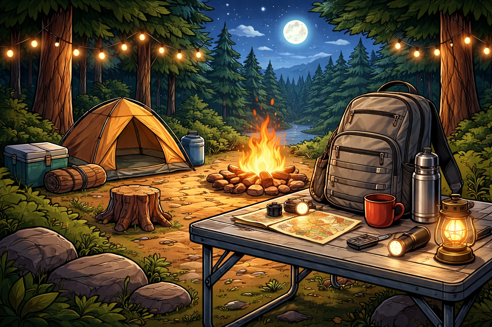
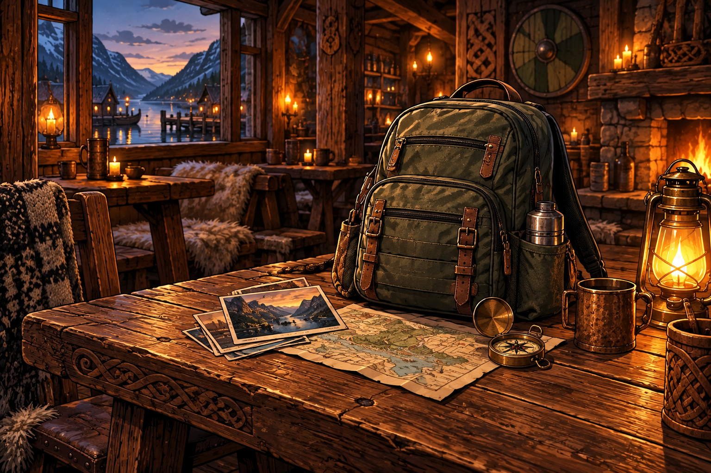

Complete · in use
The hiking backpack
A family hiking trip, a locked-away plushy, and clues left to help retrieve it.
Play all ten locks online →Online design record (DG-H) →
Open Hiking hints & solutions →
Small adventures packed with stories, clues and puzzles. Explore the finished game and the ideas taking shape.

A family hiking trip, a locked-away plushy, and clues left to help retrieve it.
Play all ten locks online →
Repair the damaged station and uncover the story behind the emergency.
Open HAROLD prototype →
A great-aunt’s field bag, family history and a mysterious invitation to Norway.
Open Norse brainstorm →
Explore space history and your uncle’s secret project.
Open Space design board →For reviewing the projects. These pages include puzzle answers and story spoilers.
A playful mystery for adults and teens, built around reusable props and a postcard trail that becomes the final map puzzle.
Open Norse brainstorm, postcards and maps →Adventure flow, puzzle details, station diagrams and the completion plan.
Open Aurora visual guide →Every clue and puzzle technique we know of — text, symbols, maps, props, materials, logic and structure — with worked examples and sources. Cross-project parts bin for building new backpacks.
Open the clue library →Selected by the designer on 5 October 2026. Navy body with yellow raised mountains, a winding trail and three pine trees. One solid 50 mm medallion, 4.4 mm thick, with the approved Space back lettering.

One-piece STL · Print package · Print notes · Thin back trial
Back down, front up. Body 3.8 mm; relief 0.6 mm; engraving 0.4 mm. Main lettering: 4.6 mm Arial Bold capitals. ESCAPE BACKPACK: 4.0 mm Arial Regular capitals, with at least 0.831 mm between adjacent brand letters. Full model and thin trial pass closed-solid mesh checks. No printer-profile slice or physical print yet; test S/B/K on the trial first.
Built-in ImageGen used the Space front as a style reference. The image supplies a flat traced profile; CAD builds the exact body, relief and shared engraved back. Concept image · Saved prompt and reference · Measurements · Mesh checks.
Rebuild: Hiking_Trip/Props/Medallion/build_medallion_v1.py, using Tools/medallion_cad.py. Use 0.20 mm layers including the first layer and a 0.4 mm nozzle; optional navy-to-yellow change before layer 20 / Z = 4.00 mm. Actual printer/material profile is unconfirmed. The STL contains geometry only.
Exact ImageGen prompt:
Use case: product-mockup. Asset type: FRONT-FACE ART CONCEPT for the Hiking adventure's 3D-printed keepsake medallion. Input image: the Space medallion front is a STYLE AND MANUFACTURING-DESIGN reference only. Match its circular face, navy body, yellow low relief, substantial shapes and simple circular border. Replace its entire space emblem with the chosen hiking motif. Primary request: one circular medallion FRONT shown straight-on from directly above, centered on plain warm ivory. A dark midnight-blue circular body with warm bright YELLOW raised details, exactly two material colours, like a low flat two-filament 3D print. No perspective tilt and no reverse side. Subject: a bold mountain landscape emblem with two recognisable rugged mountain peaks near the top, a generous winding hiking trail starting near the lower centre and leading into a valley between the peaks, and two or three simple substantial pine trees framing the lower sides. The mountains, path and trees must read as a coherent hiking emblem, with generous navy negative spaces separating the yellow forms. Give the trail a clear curving ribbon silhouette, not a hairline or a river. The mountains may have very simple broad navy cuts to suggest slopes, but no tiny snowflake details or shaded scenic painting. A single clean circular yellow border well inset from the navy coin edge completes the face. Design for later translation into 50 mm diameter and 0.6 mm high flat relief: yellow shapes are broad, crisp, distinct, substantially thicker than thin linework; avoid dense tiny branches and keep tree trunks substantial. Keep all artwork comfortably inside the circular rim. Retain the family look of the Space medallion while making hiking unmistakable. Materials: matte navy and bright yellow plastic; restrained top-left lighting only to reveal low raised edges. No gold metal, realistic landscape shading or colours beyond navy/yellow plus the ivory surrounding background. Detail is one raised height, not sculpted 3D mountains. Constraints: NO telescope, Moon, orbit, stars, spaceship, sun, compass, boot, backpack, people, animals, text, letters, dates, numbers, words, watermark, chain, loop or hole. No extra medallions, layout panels, labels or scene mockup.
Selected fronts and improved shared engraved back, updated 5 October 2026. The earlier Aurora station symbol and Canada leaf are superseded by v2. These are digital manufacturing assets; printer-profile slicing and physical print quality remain untested.

| Adventure | Selected front / version | Current print package |
|---|---|---|
| Space Exploration | Approved Space emblem · v1 | Space ZIP |
| The Raven Inheritance | Raven · v3 | Norse ZIP · Design notes |
| Hiking | Mountains, winding trail and pine trees · v1 | Hiking ZIP · Design notes |
| Space Station Aurora | Supplied STATION / AURORA maple-leaf and orbit patch · v2 | Aurora ZIP · Patch & branding |
| Hockey Expedition | Puck and road badge · v1 | Hockey ZIP |
| Canada Exploration | Corrected maple leaf and train · v2 | Canada ZIP |
The ZIPs include a full model, thin back trial and print notes. Test the trial first: the reported plastic in S/B/K has not yet been verified as fixed. All six use the same approved back layout. Sibling-project links require those local project folders. Aurora's public icon/banner and in-world patch now use the supplied navy/white artwork; its medallion adapts it to navy/yellow. Nothing has been published.
Use one agent at a time. Before switching, update the handoff, review the changes, and create a Git checkpoint when appropriate.
| Task | Best tool | Suggested model |
|---|---|---|
| Documents, presentations, PDFs, spreadsheets and visual checks | Codex | GPT-5.6 Sol · medium |
| Complex puzzle logic, major planning or final review | Codex | GPT-6 Astra · high |
| Routine HTML, documentation and maintenance | Either | Codex Terra · medium, or Claude sonnet |
| Large code changes, refactoring and terminal-based work | Claude Code | sonnet, or opusplan for difficult work |
| Mechanical edits, formatting and quick searches | Either | Codex Luna · low, or Claude haiku |
Shared agent instructionsCurrent handoffClaude Code entry point